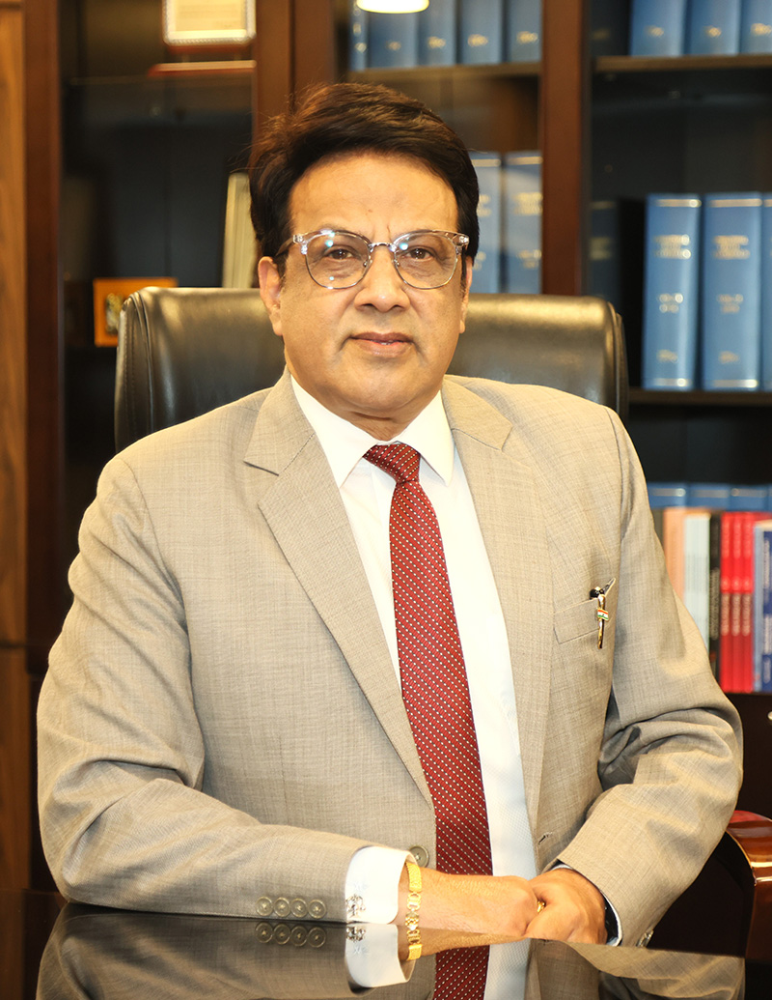

The Centre for Regulatory Studies (CRS) at National Law University, Delhi was established to address a critical national shortcoming that has persisted despite over three decades of economic reforms. While reforms have largely focused on expanding economic freedom, insufficient attention has been paid to building the human and institutional capacity required to operationalise this freedom through sound regulation. This gap has constrained the full realisation of reform outcomes. The CRS was conceived to fill this void by systematically building regulatory capacity for India's evolving market economy.
The Centre draws strength from the University's distinguished faculty, who are deeply engaged in cutting-edge teaching, research, and publication in corporate and business laws, including competition, securities, and insolvency regulation. The CRS was founded under the visionary leadership of Dr. M. S. Sahoo, former Chairperson of the Insolvency and Bankruptcy Board of India, whose pioneering contributions laid the foundation for the Centre as a cornerstone of regulatory scholarship in India. This legacy is presently carried forward under the leadership of Dr. Raghav Pandey, with a renewed focus on academic depth, policy relevance, and institutional impact.
Functioning as a comprehensive platform for regulatory engagement, the Centre undertakes research through PhD programmes, fellowships, and sponsored projects; delivers education through courses of varying duration, including appreciation, certificate, diploma, and degree programmes; and conducts outreach through seminars, workshops, and publications. It also provides consultancy, undertakes knowledge management initiatives, and works towards capacity development across the regulatory ecosystem. In the short term, the Centre proposes specialised certification programmes for senior regulatory functionaries and a one-year executive programme for mid-career officers. In the long term, it aims to launch a two-year postgraduate programme in regulation and compliance — a pioneering initiative in the Indian context designed to produce graduates who are readily employable by regulators, professional firms, and businesses alike.
Our Mandate
The Centre for Regulatory Studies is mandated to develop regulations as a rigorous and independent multi-disciplinary field of study. Recognising that effective regulation lies at the intersection of law, economics, management, accountancy, and behavioural sciences, the Centre seeks to create an integrated intellectual framework that goes beyond traditional doctrinal approaches. Its mission is to deepen understanding of regulatory design, governance, and implementation so as to strengthen the functioning of a modern market economy.
In furtherance of this mandate, the Centre has initiated structured academic engagement through credit-based courses on regulations in general, regulatory architecture and governance, and sector-specific regulation relating to securities, competition, and insolvency within the LLB and LLM programmes of the University. It has also commenced advanced research through a dedicated PhD programme in regulations, aimed at producing original scholarship that informs regulatory policy, institutional design, and enforcement practices.
The Centre envisions itself as a national and global hub for regulatory thought leadership. By combining teaching, research, outreach, consultancy, and capacity development, it seeks to bridge the long-standing gap between economic freedom and regulatory capability. Its overarching mission is to build a pool of skilled professionals and scholars capable of designing, calibrating, and implementing regulations that enable markets to function efficiently, fairly, and sustainably.

Prof. (Dr.) G.S. Bajpai
Chief Patron & Vice ChancellorProfessor (Dr.) G.S. Bajpai brings over three decades of academic and administrative experience to the Centre for Regulatory Studies. A prolific author and former Vice-Chancellor of RGNUL, he actively supports interdisciplinary research, empirical scholarship, regulatory capacity-building, and policy-oriented academic initiatives at the Centre. Prof. Bajpai has authored twenty-two books/monographs; more than sixty papers; over a hundred op-eds in leading dailies like Indian Express, the Hindu, and the Tribune and thirteen project reports.
Dr. Raghav Pandey
Centre DirectorDr. Raghav Pandey holds a Ph.D. in Insolvency Law from IIT Bombay, an LL.M. from the Indian Law Institute, and an M.A. (Law) from TISS. Prior to joining NLUD, he served as Assistant Professor at Maharashtra National Law University, Mumbai, and as Visiting Faculty at IIIT Pune. He is the author of The Law of Corporate Insolvency in India: Resolution and Liquidation (Thomson Reuters, 2021) and has published widely in peer-reviewed journals and edited volumes.
Academic Fellows
- Ms Saumya Saraswat Academic Fellow
Research Associates
- TBA Research Associate